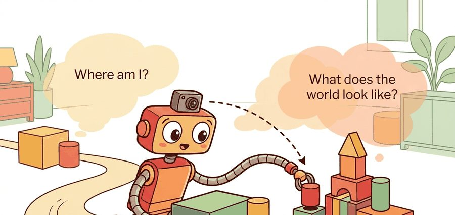
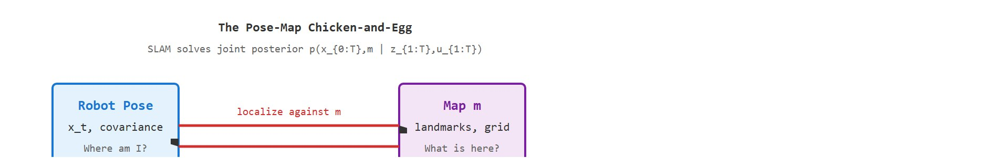
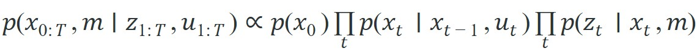

"A pose estimate is a contract between memory, sensors, and the next motion command."
A Loop Closure That Came Back With Receipts

This section assumes familiarity with coordinate frames from section 4.5 and with the Kalman filter and factor-graph mechanics introduced in section 8.6. The pose-belief interface defined here is extended through odometry in section 29.2, scan matching in section 29.3, and loop closure in section 29.5. The map and covariance outputs feed directly into the path-planning stack described in section 30.1.
A delivery robot rounds a corner in an underground parking garage, GPS gone, wheels slipping on polished concrete. Its only ground truth is a spinning lidar and whatever it remembers from a minute ago. Every autonomous system that operates beyond a motion-capture lab faces exactly this moment: sensors drift, maps are never pre-loaded, and the environment changes while the robot moves through it. SLAM (Simultaneous Localization and Mapping) is what makes that moment survivable. It matters right now because modern robots are leaving controlled testbeds for hospitals, warehouses, and city streets, where self-consistency between pose and map is the difference between a useful action and a catastrophic one. By the end of this section you will formalize the joint posterior over trajectory and map, trace every measurement to its uncertainty, and build the belief interface that the rest of the navigation stack depends on.
Hand a robot a flawless map and ask where it is standing on that map, and it can still be hopelessly lost: knowing where everything is buys nothing if you do not know where you are. A robot's pose is its position and orientation in a chosen reference frame (for a ground robot, typically $x$, $y$, and heading), and a robot cannot make a reliable plan if pose and map are treated as separate chores. The map is built from poses, while pose estimates depend on the map. This is the pose-map chicken-and-egg, and it is why SLAM is an estimation problem rather than a drawing problem. A robot that knows where things are but not where it is, is not localized: it is lost with a very detailed map.
The state usually contains a trajectory $x_{0:T}$ and map variables $m$. Controls $u_{1:T}$ predict motion, while observations $z_{1:T}$ correct that prediction. A localization-only system estimates $x_t$ against a known map; a mapping-only system assumes poses are good enough; SLAM estimates both and exposes the remaining uncertainty.
Figure 29.1.2 below diagrams this coupling directly: the Robot Pose node and the Map node each depend on the other, and the Sensor Observation node is what breaks the deadlock by correcting both at once.

A common assumption is that localization and mapping can be solved in sequence: first build a map with known poses, then localize within that map. This decomposition fails in embodied AI because the robot has no external ground-truth source for either quantity. Pose estimates come from sensor measurements corrupted by drift and noise. A map derived from those poses inherits every accumulated error. Treating the two problems as independent ignores their shared uncertainty. Estimates that look reasonable in simulation then diverge in physical deployment. The correct mental model maintains a joint posterior over trajectory and map simultaneously. Every sensor update informs both variables, and the covariance between them tracks how errors in one corrupt the other.
A localization claim in this section is incomplete without frame, timestamp, pose covariance, map version, and the planner or controller that consumed it. Otherwise the result is a drawing rather than an interface.
Because the trajectory, map, and their shared uncertainty cannot be separated, the formal model must package them into a single object the rest of the stack can query. The estimator in this opening section is a belief interface: pose, map, timestamp, covariance, and downstream consumer must be carried together. The posterior is useful only if the planner can ask which part of the world model is fresh enough to act on.
Why covariance matters on a physical robot. A robot that knows its position but not how uncertain that position is cannot decide when to relocalize versus when to commit to a motion. Underestimate the uncertainty and the planner treats a rough guess as ground truth, colliding in narrow passages or failing grasps. Overestimate it and the robot pauses and runs recovery behaviors that stall the task. Covariance is the signal that turns a number into a decision-ready estimate.
How covariance is maintained. The pose covariance matrix encodes the expected squared error in each direction and the correlations between axes. After a motion command, the filter inflates covariance by adding process noise proportional to wheel-slip and IMU (Inertial Measurement Unit) drift models. After a sensor observation, the Kalman gain (a weighting factor between 0 and 1 that sets how much a new measurement moves the estimate versus how much the prior belief is trusted) scales the correction, using the innovation, the difference between the measurement actually received and the measurement the current belief predicted. A precise sensor with small observation noise shrinks the covariance more than a noisy one. Each predict-update cycle propagates this ellipsoid forward. Loop closures, recognizing a previously visited place and using that match to correct accumulated drift (the full mechanics are covered in section 29.5), can sharply deflate the covariance when a revisited place anchors the estimate to a known landmark.
Before reading on, guess: if a robot drives 100 meters down a corridor using wheel odometry alone, how far off is its position estimate by the time it returns to the start?
Applying the belief interface to a decision. Concretely: suppose the reported covariance implies a 1-sigma position error of 8 cm, and the next planned motion is to pass through a 30 cm doorway gap on either side of the robot's footprint. A planner that consumes this belief interface compares the covariance-derived error bound against the clearance required by the action; if 3-sigma error exceeds the clearance, the planner must trigger a relocalization or slow-and-verify behavior rather than executing the motion open-loop. This is the concrete "so what" of the interface: pose and covariance are not just reported, they gate which actions are allowed to run.

The notation matters because it names evidence sources: odometry, inertial cues, scans, visual landmarks, and loop closures. The engineering move is to keep a residual and uncertainty for each source so a bad route can be traced to the measurement that moved the belief.
To see what keeping a residual per source actually buys, and to settle the corridor guess posed above, watch one production system put this posterior to work. Consider a specific case. Google's Cartographer system, deployed on the Backpack platform and on Boston Dynamics Spot, maintains a 2-D or 3-D submap grid (a locally consistent map patch built from a short batch of scans, later stitched to other submaps rather than one single global grid). New lidar scans insert into that grid continuously. Pure wheel odometry over that same 100-meter corridor typically accumulates 1 to 3 meters of position error. Cartographer with loop closure brings it under 5 cm, a 30-to-60-fold reduction from the same sensor data. It gets there by maintaining the joint posterior instead of integrating pose and map independently. Cartographer creates a pose graph node (a stored pose estimate that later constraints can pull into agreement with the rest of the trajectory) every few centimeters of travel. When it detects a loop closure (a scan matches a previous submap within a configurable score threshold), it adds a constraint and re-optimizes the entire graph with Ceres Solver, an open-source nonlinear least-squares optimizer that adjusts every stored pose at once to satisfy all constraints as closely as possible. On a typical indoor corridor scan, Cartographer reported a loop-closure translation error under 5 cm after 100 m of travel (as of the 2016 benchmark in Hess et al., ICRA 2016). This concrete pipeline, sensor to submap to constraint to optimizer, is what the posterior $p(x_{0:T},m\mid z_{1:T},u_{1:T})$ looks like in practice.
So far: scans build local submaps, submaps are linked by pose graph nodes, and a detected loop closure adds a constraint that a nonlinear solver (Ceres) uses to re-optimize the whole graph at once, which is how the abstract posterior turns into a concrete pipeline.
In Cartographer, the parameter min_score inside constraints_builder (default 0.55) controls which scan-to-submap matches become loop-closure constraints. Raising it to 0.65 on featureless warehouse floors or long corridors dramatically reduces false closures that silently warp the map. If the optimized trajectory suddenly jumps after a loop closure, check this threshold before suspecting the solver: most "Ceres diverged" reports in practice trace back to a spurious low-score constraint rather than a solver bug.
Code Fragment 1 is a pose-belief smoke test. Before ROS nodes and graph optimizers enter the picture, it shows how one observation changes an estimate and whether the uncertainty moves in the expected direction.
# Compare a pose prior with one landmark observation.
# The innovation shows whether the new range evidence agrees with the map.
import numpy as np
prior_xy = np.array([2.0, 1.0])
landmark_xy = np.array([5.0, 1.0])
measured_range_m = 2.7
predicted_range_m = np.linalg.norm(landmark_xy - prior_xy)
innovation_m = measured_range_m - predicted_range_m
print(f"predicted={predicted_range_m:.2f} m")
print(f"innovation={innovation_m:.2f} m")Expected output interpretation. The printed residual shows a 30 cm disagreement in the corrective direction: the sensor says the landmark is nearer than the prior predicts. In a filter or factor graph, this measurement would contribute a correction term that pulls the pose estimate, the landmark estimate, or both toward a shorter range.
Trace through a single predict-update cycle with concrete numbers. A robot believes it is at position $x = 2.0$ m with variance $P = 0.40$ m$^2$. It drives forward a commanded $u = 1.0$ m, so the prediction is $\hat{x} = 2.0 + 1.0 = 3.0$ m. Process noise $Q = 0.10$ m$^2$ inflates the variance: $P^- = 0.40 + 0.10 = 0.50$ m$^2$. Now a wall-range sensor with noise $R = 0.20$ m$^2$ measures the robot at $z = 3.6$ m (observation model is identity here, so $H = 1$). The innovation is $\nu = z - \hat{x} = 3.6 - 3.0 = 0.6$ m. The Kalman gain is $K = P^- / (P^- + R) = 0.50 / 0.70 = 0.714$. The corrected pose is $x = 3.0 + 0.714 \times 0.6 = 3.43$ m, and the corrected variance is $P = (1 - K)P^- = 0.286 \times 0.50 = 0.143$ m$^2$. Note the two takeaways: the estimate moved 0.43 m of the 0.6 m disagreement (the gain trusted the sensor partially), and the variance dropped from 0.50 to 0.143, so the observation made the robot more certain. Re-run with a noisier sensor ($R = 2.0$) and the gain falls to 0.20, moving the pose only 0.12 m: a noisy sensor barely shifts the belief.
In production, ROS 2 tf2 handles frame transforms, Nav2 consumes map and localization topics, and GTSAM or Ceres solves larger nonlinear least-squares problems. That is the reduction from hand-checking residuals to configuring maintained graph and middleware components.
Use the hand calculation to expose the belief update, then let ROS 2, GTSAM, Cartographer, or Nav2 handle large logs and maps. The hand check remains the regression test for units, frames, and uncertainty.
Replay one short route with delayed transforms, missing scan packets, and a wrong initial pose as separate perturbations. The point is to learn whether failure begins as sensing ambiguity, association error, optimization drift, or planner misuse of a stale map.
Think of covariance like the margin of error a weather forecaster announces alongside a temperature prediction. A good forecaster says "22 degrees, plus or minus 4" and widens that margin when the models disagree. Covariance collapse is the forecaster who keeps saying "plus or minus 0.1" day after day regardless of conditions, because the math stopped being fed fresh uncertainty. The number still changes, but the confidence band is no longer honest, and anyone acting on a forecast that tight will be blindsided when the real temperature arrives.
The most common silent failure is covariance collapse: the filter becomes overconfident because process noise was tuned too low or loop closures are accepted without a consistency check. The robot reports a tight pose uncertainty while the true error grows, so the planner commits to a path it cannot safely execute. The symptom is a robot that navigates confidently into obstacles or drifts off a corridor centerline without triggering any localization alert. Detecting this requires comparing the filter's self-reported covariance against an independent ground-truth reference (a fiducial, a printed marker such as a barcode or AprilTag placed at a known location so the robot can check its estimate against it, a known docking station, or a separate odometry source) at regular intervals.
For a warehouse robot, the minimum replay bundle is odometry, IMU, scan stream, pose estimate, covariance, active map layer, local costmap, and recovery action. That bundle separates being lost from being correctly localized in a changed aisle.
Amazon Robotics drives over 750,000 mobile drive units across its fulfillment centers, and each one solves exactly the where-am-I-and-what-does-the-world-look-like problem to ferry inventory pods without colliding in dense traffic. The fleet localizes against a fiducial grid of 2-D barcodes embedded in the floor, fusing those readings with wheel odometry so that a momentarily occluded marker does not lose the pose, the same predict-correct belief interface formalized here. The shared map plus per-robot covariance is what lets thousands of units commit to motions in a shared aisle without a central collision check on every step.
Three concrete directions are colliding in current SLAM work. First, 3D Gaussian Splatting SLAM systems such as SplaTAM (Keetha et al., 2024) build photorealistic submaps at 100+ fps on an RTX 3090, but their per-Gaussian memory footprint typically scales poorly beyond room-sized scenes; a Boston Dynamics Spot carrying a single depth camera can saturate 12 GB VRAM in practice after roughly 200 m of corridor travel under a typical Gaussian-density configuration, forcing submap culling strategies that reintroduce drift. Second, open-vocabulary segmentation models such as CLIP-Fields allow a warehouse robot to query the map by object name ("find the charging dock") without pre-labeling, but the CLIP backbone typically adds on the order of 80 ms per query on an NVIDIA Jetson Orin, which is long enough to stall a 10 Hz planning loop. Third, foundation-model localization (e.g., AnyLoc, 2024) achieves place recognition across seasons and lighting changes that break conventional descriptor matching, yet its retrieval latency, in practice on the order of 150-300 ms per query, is incompatible with reactive collision avoidance that requires a fresh pose at 50 Hz. The unresolved engineering gap is not whether these representations work in isolation; it is whether their compute and latency budgets can coexist on the constrained onboard hardware that a mobile manipulator actually carries.
A pose estimate is a contract between memory, sensors, and the next motion command.
Can you state the state variables, observation residual, uncertainty representation, replay artifact, and most likely field failure for where am i and what does the world look like? If one field is vague, the estimator is not ready for embodied use.
Where am I and what does the world look like is production-ready only when geometry, uncertainty, timing, and action consequences are tested together.
Design the two-run test around global localization: run once with a correct prior and once with an intentionally ambiguous starting pose. Report convergence time, covariance collapse, wrong-mode persistence, and the planner action blocked until localization is credible.
Goal: Feel viscerally how the pose covariance inflates during dead reckoning and deflates when a sensor update or loop closure arrives, the core of the belief interface in this section.
Tools needed: Python with numpy and matplotlib (no robot or ROS required; about 40 lines of code). Optionally filterpy for a ready-made KalmanFilter class.
Setup: Simulate a robot driving a straight 20 m corridor in 0.5 m steps. Each predict step advances the mean by the commanded motion and adds process noise $Q$ to the 2x2 position covariance. Every 8th step, apply a range-to-wall measurement update with observation noise $R$. Plot the 1-sigma covariance ellipse at every step on one figure.
What to vary: (1) the process noise $Q$ from 0.01 to 0.5 m$^2$ per step; (2) the measurement interval, from every step to never; (3) inject one loop-closure update at the final step that snaps the robot back to a known landmark.
What to observe: With no updates, the ellipse grows without bound, the visual signature of pure odometry drift. Frequent updates keep it small and steady. The loop closure makes the whole trailing ellipse chain snap tighter at once. Then deliberately set $Q$ too small and watch the ellipse stay artificially tiny even though the true error grows: you have reproduced covariance collapse, the silent failure mode flagged earlier in this section.
Beginner (weekend): Build a 2-D range-sensor EKF (Extended Kalman Filter) localization toy in a known map using PyBullet: spawn a differential-drive robot in a rectangular arena, generate synthetic lidar ranges from known wall positions, and run one predict-update cycle per timestep to track the pose covariance as the robot drives a square. The key challenge is correctly transforming landmark residuals into the robot frame so the covariance ellipse shrinks when the robot faces a wall and inflates when it turns into open space.
Intermediate (1-2 weeks): Integrate ROS2 Nav2 with a simulated warehouse floor in Isaac Lab: configure AMCL (Adaptive Monte Carlo Localization, a particle-filter localizer that represents the pose belief as a weighted cloud of pose guesses instead of a single Gaussian) for localization against a pre-built occupancy grid, introduce a deliberate wheel-slip perturbation via Isaac Lab's friction API, and record rosbags (ROS's recorded-and-replayable message logs) that capture the pose covariance widening during slip and contracting after a loop closure. The key challenge is tuning Nav2's amcl motion model parameters so recovery from slip does not require a manual relocalization call.
Intermediate (1-2 weeks): Use LeRobot's dataset infrastructure to replay a real-robot trajectory collected with a ROS2-equipped arm, feed the odometry and wrist-camera frames into a minimal factor-graph built with GTSAM, and compare the smoothed trajectory against the raw odometry to quantify drift. The key challenge is aligning LeRobot's frame conventions with GTSAM's Pose3 API without introducing silent unit or handedness errors.
Continue to Section 29.2: Odometry and dead reckoning, where this state-estimation contract becomes the input to the next embodied capability.
Durrant-Whyte, H. and Bailey, T. "Simultaneous Localization and Mapping." IEEE Robotics and Automation Magazine, 2006. https://ieeexplore.ieee.org/document/1638022
Classic SLAM tutorial that frames the estimation problem and the role of uncertainty.
GTSAM Project. "Factor Graphs and GTSAM." Official documentation. https://gtsam.org/
Primary tool reference for factor graphs, smoothing, pose graphs, and robotics estimation examples.
ROS 2 Navigation Project. "Nav2 documentation." Official documentation. https://navigation.ros.org/
Primary documentation for integrating localization, maps, planners, controllers, behavior trees, and recoveries.